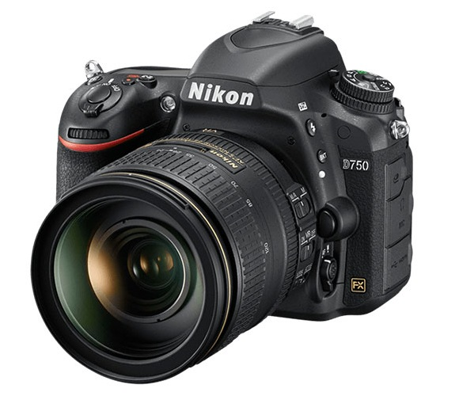
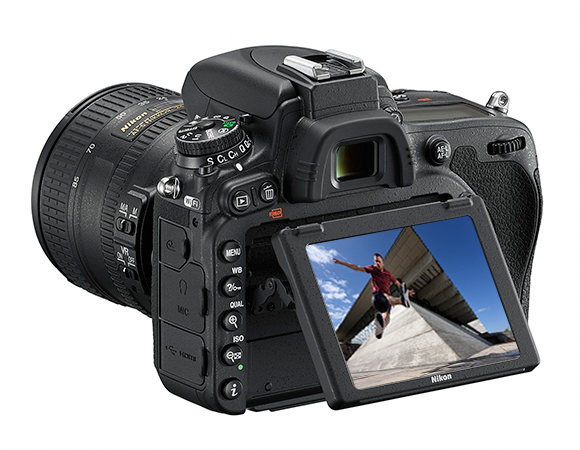

NIKON D750
Libere su visión creativa con la D750: una cámara rápida, versátil y ágil. En un mundo en el que todo es posible, este portento de 24,3 megapíxeles de fotograma completo le ofrece la libertad que desea. Nada se le resiste a esta cámara, que está equipada con avanzada tecnología de imagen y optimizada para ser muy compacta.
 El nuevo sensor de formato FX proporciona una calidad de imagen excepcional con resultados más nítidos que nunca con sensibilidades ISO elevadas. Un rendimiento de AF de sensibilidad extraordinaria, una velocidad de ráfaga de hasta 6,5 fps y la opción de grabación de vídeo de máxima definición (Full HD) a 1080/60p se combinan con la pantalla abatible vertical para ofrecer una libertad de expresión total. Gracias a la conexión Wi-Fi integrada, es muy sencillo compartir en un instante impresionantes fotografías.